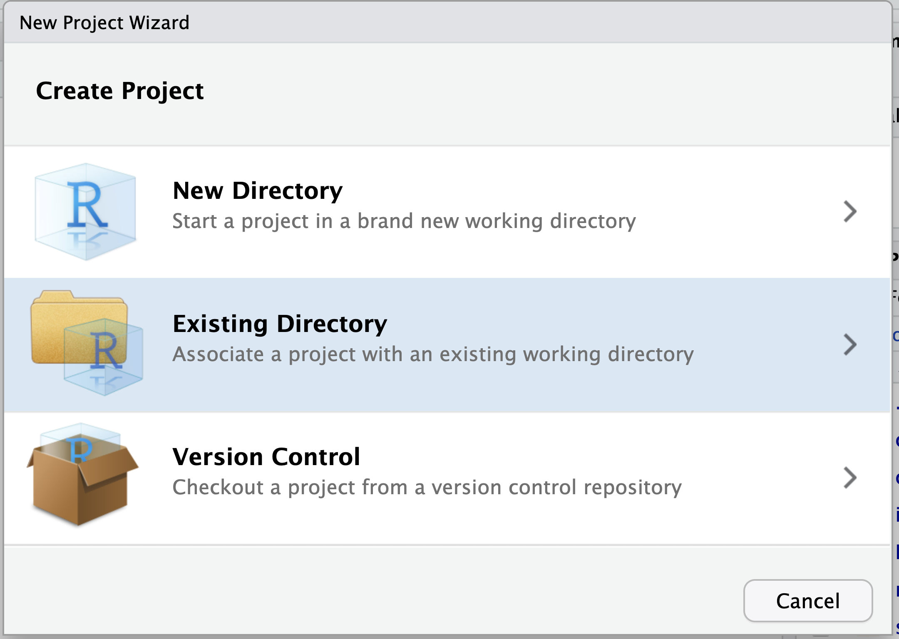
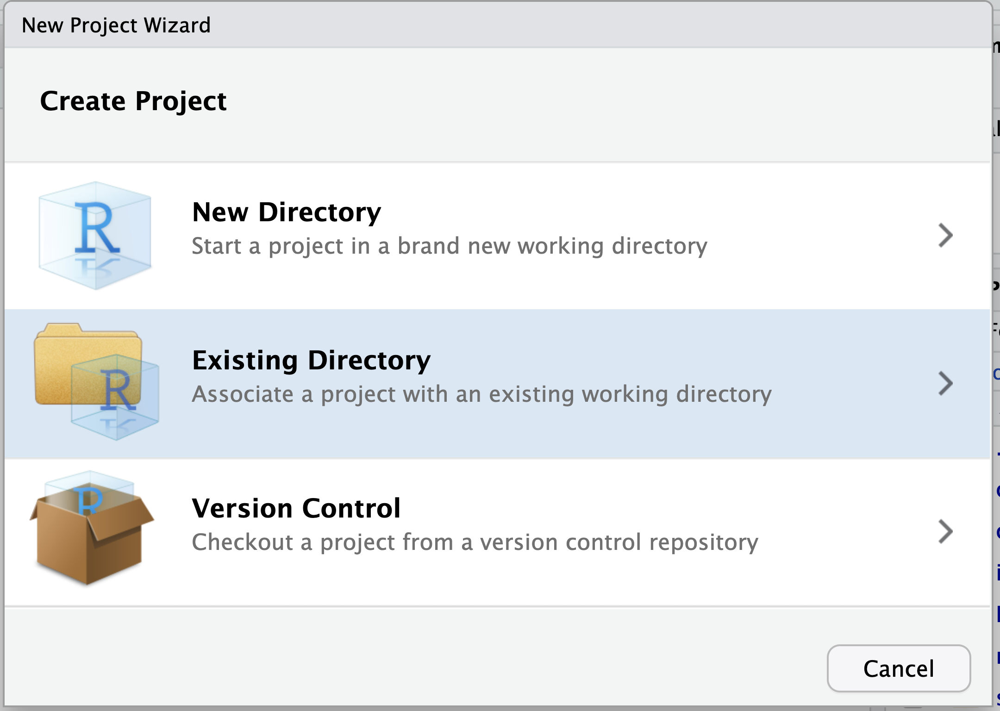

Editing the blog
- Choose an existing directory (left) and click browse to find the cloned repository (right)

First, we need to make sure you have setup an RStudio project with gitHub. Once you have set this up, we can get started with creating the blog.
This tutorial will walk you through the steps of building your own blog using blogdown and gitHub actions. By then end, you will have a website and blog
First, make sure the blogdown and usethis packages are installed on your machine
install.packages("usethis")
install.packages("blogdown")blogdown and gitHubR package blogdownGitHub actions are a great way to use continuous integration tools to automatically build and host the website using gitHub pages. A nice benefit of using gitHub actions is that everything for your blog is contained within a single hosted environment.
The key to using gitHub actions is to setup a folder heirarchy. In the blogdown project folder, create a folder .github that has file named .gitignore that contains the text *.html. Also in the .github folder, create a folder named workflows that has a file named deploy_blogdown.yml. The file deploy_blogdown.yml is the file that tells the gitHub servers how to build your website. I’ll go through the instructions from deploy_blogdown.yml in detail first, then post the full contents of deploy_blogdown.yml at the end of this section.
The gitHub actions file deploy_blogdown.yml begins with
on:
push:
branches:
- masterwhich tells the server to run this action on any pushes to the master branch. As gitHub is moving from master to main as the default branch name, this might need to be modified to replace master with main.
In the gitHub actions script deploy_blogdown.yml, there are two major jobs. The first job builds the blog from the source files (.Rmd and other files) and saves the output of the build as a gitHub artifact (saved output files). The second job takes the contents of the build artifact (output files) and pushes these to a gitHub pages branch of the github repository that hosts the blog through gitHub pages.
Here we introduce the section that runs the job named deployblog which builds the site.
name: deployblog
jobs:
blogdown:
name: Render-Blog
runs-on: macOS-latest
steps:
- uses: actions/checkout@v1
- uses: r-lib/actions/setup-r@v1
- uses: r-lib/actions/setup-pandoc@v1
- name: Install rmarkdown
run: Rscript -e 'install.packages(c("rmarkdown","blogdown"))'
- name: install hugo
run: Rscript -e 'blogdown::install_hugo("0.81.0")'
- name: Render blog
run: Rscript -e 'blogdown::build_site()'
- uses: actions/upload-artifact@v1
with:
name: public
path: public/
The bit (name:deployblog) names the action. The section
jobs:
blogdown:
name: Render-Blog
runs-on: macOS-latestcreates a job with the job_id of blogdown and the job name Render-Blog. The runs-on: macOS-latest tells the server to create a macOS virtual machine for the job. One can also run jobs on a virtual Windows or Linux OS if desired.
The next sections define the sequence of individual tasks within the job. The following sections have instructions for installing necessary software for the virtual machine, including R and pandoc for knitting the blog.
steps:
- uses: actions/checkout@v1
- uses: r-lib/actions/setup-r@v1
- uses: r-lib/actions/setup-pandoc@v1The next set of steps run the R code to install necessary R packages and then build the blog
- name: Install rmarkdown
run: Rscript -e 'install.packages(c("rmarkdown","blogdown"))'
- name: install hugo
run: Rscript -e 'blogdown::install_hugo("0.81.0")'
- name: Render blog
run: Rscript -e 'blogdown::build_site()'The final section of the first job uploads the results from the final build as an artifact (set of files) that will then be pushed to the gitHub pages branch of the repository
- uses: actions/upload-artifact@v1
with:
name: public
path: public/The second job in deploy_blogdown.yml takes the output of the built blog and pushes the build files to a gitHub pages branch. This section assumes that, prior to the first build using continuous integration, an empty gitHub pages branch gh-pages has been created. Instructions on how to do this step are in the blog at link here.
# Need to first create an empty gh-pages branch
# see https://pkgdown.r-lib.org/reference/deploy_site_github.html
# and also add secrets for a GH_PAT and EMAIL to the repository
# gh-action from Cecilapp/GitHub-Pages-deploy
checkout-and-deploy:
runs-on: ubuntu-latest
needs: blogdown
steps:
- name: Checkout
uses: actions/checkout@master
- name: Download artifact
uses: actions/download-artifact@v1.0.0
with:
# Artifact name
name: public # optional
# Destination path
path: public # optional
- name: Deploy to GitHub Pages
uses: Cecilapp/GitHub-Pages-deploy@master
env:
GITHUB_TOKEN: ${{ secrets.GH_PAT }} # https://github.com/settings/tokens
with:
email: ${{ secrets.EMAIL }} # must be a verified email
build_dir: public/ # "_site/" by defaultThe full contents of deploy_blogdown.yml are below:
on:
push:
branches:
- master
name: deployblog
jobs:
blogdown:
name: Render-Blog
runs-on: macOS-latest
steps:
- uses: actions/checkout@v1
- uses: r-lib/actions/setup-r@v1
- uses: r-lib/actions/setup-pandoc@v1
- name: Install rmarkdown
run: Rscript -e 'install.packages(c("rmarkdown","blogdown"))'
- name: install hugo
run: Rscript -e 'blogdown::install_hugo("0.81.0")'
- name: Render blog
run: Rscript -e 'blogdown::build_site()'
- uses: actions/upload-artifact@v1
with:
name: public
path: public/
# Need to first create an empty gh-pages branch
# see https://pkgdown.r-lib.org/reference/deploy_site_github.html
# and also add secrets for a GH_PAT and EMAIL to the repository
# gh-action from Cecilapp/GitHub-Pages-deploy
checkout-and-deploy:
runs-on: ubuntu-latest
needs: blogdown
steps:
- name: Checkout
uses: actions/checkout@master
- name: Download artifact
uses: actions/download-artifact@v1.0.0
with:
# Artifact name
name: public # optional
# Destination path
path: public # optional
- name: Deploy to GitHub Pages
uses: Cecilapp/GitHub-Pages-deploy@master
env:
GITHUB_TOKEN: ${{ secrets.GH_PAT }} # https://github.com/settings/tokens
with:
email: ${{ secrets.EMAIL }} # must be a verified email
build_dir: public/ # "_site/" by defaultAwesome! We have a live blog. Now, all you have to do is make changes on the server, push them to gitHub, and then wait for Netlify to deploy the changes for your blog to automatically update.
Adding a .Rproj file to the blog



Changing the site configuration
The config.toml file changes global settings for your site. Let’s open this file in RStudio and change the title, gitHub url and, if you want, your Twitter url (Make sure these accounts are professional if you link to them!!!)
The content folder has a file about.md. Edit this file to tell us a little about yourself.
You can update the site locally (i.e., on the server, your own computer, but not on the website) using blogdown::serve_site()
You can create a new post using blogdown::new_post(title = "A first post")
content/post/ directory so you can edit them there (or delete the default posts)Before you push to gitHub to deploy your site, you can use blogdown::build_site() then push the repository to gitHub to update the site.
More details are available at https://bookdown.org/yihui/blogdown/
tinytex package for converting a .Rmd file to a pdf. Typeinstall.packages("tinytex")then
tinytex::install_tinytex()to get this installed
resume-example.Rmd, svm-latex-resume.tex, and rick-martel-crop.jpg – or any images you added as well) to the static folder in your blog directory.When I tried to compile the .Rmd file to pdf on the server, I got a compile error. To fix this, I ran
rmarkdown::render("./static/resume-master/resume-example.Rmd")where the file path was where I uploaded the .Rmd file for the resume.
.Rmd everytime I changed my resume fileconfig.toml file where the path of the url is the same path as where the resume-example.Rmd file was (without the /static/ directory but with a leading ""):[[menu.main]]
name = "Resume"
url = "/resume-master/resume-example.pdf"R and add the file build.R that contains the following lines:blogdown::build_dir('static')static directory (your resume) and build these files for hosting on the website when you run blogdown::build_site()blogdown::build_site()to build the pdf document and
blogdown::serve_site()to allow for interactive editing and to have your resume added to the blog
.csv files), you need to tell blogdown to ignore the .csv files. To do this, open the config.toml file and modify the line:ignoreFiles = ["\\.Rmd$", "\\.Rmarkdown$", "_cache$", "\\.knit\\.md$", "\\.utf8\\.md$"]by adding "\\.csv$" to tell blogdown to ignore .csv files
so that the ignoreFiles line is now
ignoreFiles = ["\\.Rmd$", "\\.Rmarkdown$", "_cache$", "\\.knit\\.md$", "\\.utf8\\.md$", "\\.csv$"].Rmd to .pdf, you don’t have tinytex installed.
Run the following to resolve this issue
install.packages("tinytex")
tinytex::install_tinytex()If you get the error shown below when knitting a .Rmd to .pdf, you have a unicode character in your .Rmd

To find the unicode character(s), open the find bar using ctrl-f (cmd-f on Mac) or using the menu bar: edit -> find. Make sure the Regex box is checked and search for [^\x00-\x7F]

Find the unicode character and delete it for the .Rmd document to compile
In the R console, run
blogdown::build_site()Then open up a terminal window and check the git status
git statusThere should be some un-tracked directories that end in the folder /figure-html/. Add these to git using
git add path/to/figure-htmland commit with
git commit -m "commit message"In the R console, run
blogdown::build_site()Then open up a terminal window and check the git status
git statusThere should be some un-tracked directories that end in the folder /figure-html/. Add these to git using
git add path/to/figure-htmland commit with
git commit -m "commit message"To Do: add screenshot of build error message
.csv files), you need to tell blogdown to ignore the .csv files. To do this, open the config.toml file and modify the line:ignoreFiles = ["\\.Rmd$", "\\.Rmarkdown$", "_cache$", "\\.knit\\.md$", "\\.utf8\\.md$"]by adding "\\.csv$" to tell blogdown to ignore .csv files
so that the ignoreFiles line is now
ignoreFiles = ["\\.Rmd$", "\\.Rmarkdown$", "_cache$", "\\.knit\\.md$", "\\.utf8\\.md$", "\\.csv$"].csv files), the Netfliy build might fail, pointing to a .csv fileTo fix this, you need to tell blogdown to ignore the .csv files. To do this, open the config.toml file and modify the line:
.small[
ignoreFiles = ["\\.Rmd$", "\\.Rmarkdown$", "_cache$", "\\.knit\\.md$", "\\.utf8\\.md$"]]
by adding "\\.csv$" to tell blogdown to ignore .csv files
so that the ignoreFiles line is now
.small[
ignoreFiles = ["\\.Rmd$", "\\.Rmarkdown$", "_cache$", "\\.knit\\.md$", "\\.utf8\\.md$", "\\.csv$"]]
blogdown to ignore the .csv files. To do this, open the config.toml file and modify the line:ignoreFiles = [..., "\\.csv$"]where the ... is all the current values in this list . Then add "tidytuesday" to tell blogdown to ignore all files in the tidytuesday and recursive directories so that the ignoreFiles line is now
ignoreFiles = [..., "\\.csv$", "tidytuesday"]/.git/ respositories in your root blog directory (typically caused by pulling data from tidytuesday)
/.git/ directory is by navigating to the root project directory in the terminal then typingfind . -type d -name '.git'which should return something like
./git
./data/tidytuesday/.gitWe have to remove the offending /.git/ directory. Do this in the terminal by typing (making sure to modify the path to the correct path returned by the find command – ./data/tidytuesday/ in the example)
rm -rf ./path/to/.gitThen we remove the directory containing the /.git/ directory we just removed from tracking by git using (notice the two --s before cached and the path returned by find )
git rm -rf --cached ./path/to/Type
git statusto confirm that the correct path has been deleted from tracking by git. Then add the deleted directory back into tracking by git with
git add ./path/to/Then commit and push. Verify that the website builds correctly on Netlify
Displaying equations using blogdown and the Academic template by default does not wrap the equation. To allow the equation box to scroll horizontally, modify the file /themes/github.com/wowchemy/wowchemy-hugo-modules/wowchemy/assets/scss/custom.scss to
// Override this file to add your own SCSS styling.
.MathJax {
overflow-x: auto; /* Horizontally scroll long equations. */
}